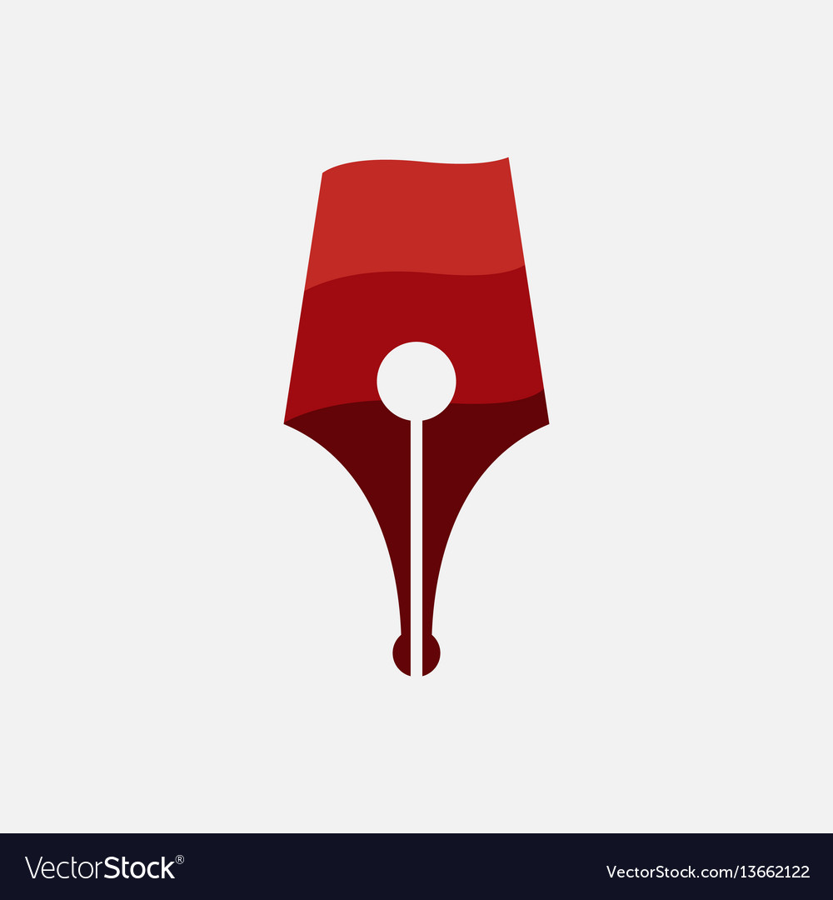

Creative Writing

Photography

Recommendations
Books
Fantasy
- Mistborn Trilogy by Brandon Sanderson
- Stormlight Archive by Brandon Sanderson
- The Kingkiller Chronicle by Patrick Rothfuss
Fiction
- 1984 by George Orwell
- Turtles All The Way Down by John Green
- The Unbearable Lightness of Being by Milan Kundera
- The Goldfinch by Donna Tartt
Non-Fiction
- The Conquest of Happiness by Bertrand Russell
- Factfulness by Hans Rosling
Multimedia
Shows
- Brooklyn Nine-Nine
- Bojack Horseman
- Master of None
- Breaking Bad
- The Newsroom
Movies
- 12 Angry Men
- The Prestige